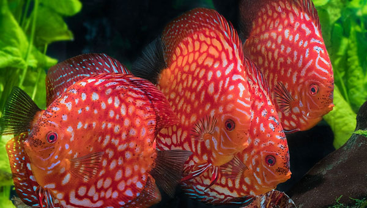
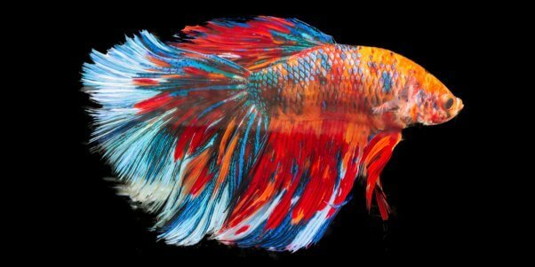

Los peces favoritos de la poblacion mexicana
-
Guppy

Este pez de agua dulce, proveniente del Caribe, es sin duda uno de los peces de acuario más conocidos. El guppy es considerado fácil de mantener y por lo tanto perfecto para principiantes. En su hábitat natural, este colorido pez de hasta 5 cm de largo, reside en bancos de peces, por lo que en el acuario también debe tener compañía. El pez guppy se lleva bien con otras especies. -
Molly
Este popular pez ornamental habita en América del Sur y América Central. Por medio de cruces mediante otras formas de cría surgieron varios tipos diferentes de aletas, por lo que hoy en día existen molly con una pequeña aleta dorsal redonda, una aleta dorsal alargada o con una aleta en forma de vela de barco. Estos peces totalmente negros llegan a medir entre 6 a 10 cm, son considerados robustos y fáciles de cuidar. -
Tetra Neon
El pez neón es una alegría para la vista gracias a sus brillantes bandas rojas y azules. Estos pequeños peces de agua dulce provenientes del Amazonas solo están cómodos en bandadas y por eso han de tenerse en acuarios con al menos diez compañeros, cuantos más, mejor. -
Platy
Al igual que el pez guppy, el platy pertenece a la familia de los poecílidos, quienes retienen los huevos de sus crías dentro de su cuerpo. El pequeño platy proviene de América Central, es muy sociable y prefiere estar en grupo, cerca de la superficie. Este adorable pez ornamental puede encontrarse con gran variedad de colores y, gracias a que su tenencia es simple, es muy popular entre los primerizos y novatos en la acuariofilia. -
Disco

Este pez se desliza por el mundo acuático como un disco de colores vivos entusiasmando a todo el que lo vea. El majestuoso pez de agua dulce es bastante exigente en cuanto a la calidad del agua, pues es propenso a infecciones por bacterias y parásitos. -
Betta

El pez betta proviene de Camboya y Tailandia y es uno de los peces laberíntidos más coloridos que existen. Su color originario es un marrón rojizo, pero mediante la cría se ha extendido la combinación de colores de rojos, a azules e incluso negros, que se extienden hasta las aletas. Los machos son bastante agresivos entre sí, se atacan y se destrozan las aletas. -
Angel
El pez ángel, también conocido como pez escalar, es llamativo debido a su forma de flecha de sus aletas. También destaca por su tamaño, pues llega a alcanzar unos 15 cm de largo y hasta 25 cm de alto, lo que significa que el acuario ha de tener suficiente profundidad. En cuanto a las exigencias de comida y de la calidad de agua, estos peces pertenecientes a la familia de los cíclidos son bastante fáciles de cuidar. -
Cebra

Este animado y nadador pez cebra es muy querido por amantes de acuarios por todo el mundo. Es ideal para principiantes, pues es fácil de mantener y se lleva bien con otros peces de agua dulce. Debe su nombre a las bandas horizontales azul oscuro que cubren su cuerpo. Estos delgados peces viven en bandadas y les gustan los acuarios alargados con una ligera corriente de agua.
Acuario Flipper